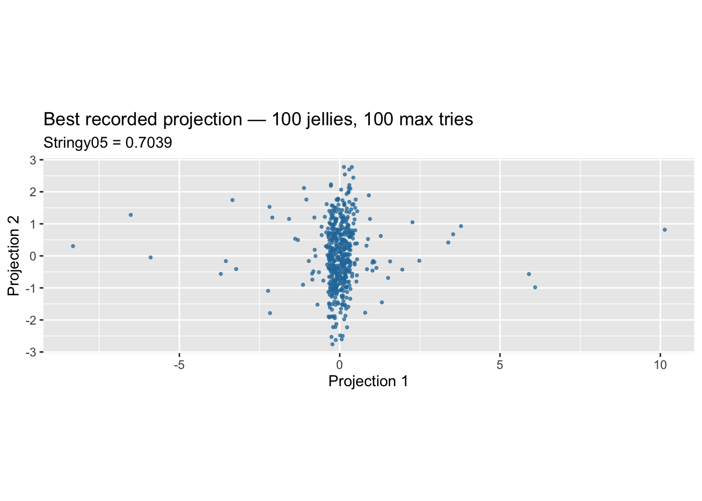
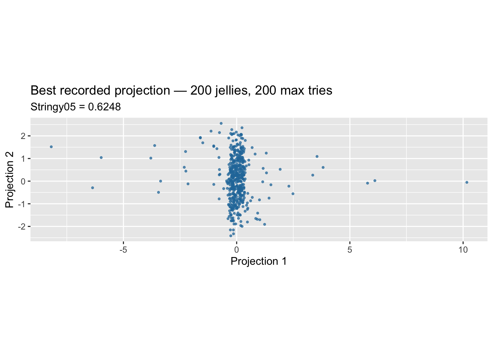

We investigate whether the Jellyfish Search Optimiser in tourr can recover a cubic pattern hidden in a ten-dimensional dataset created by bilbyr::gen_hidden_stringy(). We initially compare 30 jellies (the default population size) with 100 jellies, holding the remaining search settings fixed. We record the best discovered Stringy05 value and the elapsed runtime. If recovery is inadequate, later experiments will vary max.tries.
2 How Jellyfish searches
Jellyfish is a stochastic, population-based optimiser for projection pursuit. Instead of searching with a single candidate, it maintains a population of jellies. Each jelly is a candidate orthonormal projection basis \(A_j\in\mathbb{R}^{p\times 2}\); projecting the observations gives \(XA_j\). We use rescaled Stringy05 as the interestingness index:
At the start, Jellyfish generates random projection bases and evaluates their indices. During the search it updates the candidates using population-guided and stochastic movements, orthonormalises proposed bases, and evaluates the new projections. We retain only records with info == "current_best" for the subsequent analysis, and select the highest-scoring basis from those records.
Two settings are particularly important:
n_jellies controls the number of candidate projection bases maintained in the population. The default in guided_tour() is 30. A larger population may explore more regions of the projection space, but increases computational cost.
max.tries limits the search’s unsuccessful attempts. The guided_tour() default is 25. Allowing more attempts can extend the search and increase computational cost.
max_frames = 100 is a tour animation frame limit; it is not the same as either of these optimiser settings. A fixed seed makes an individual configuration reproducible.
In this first comparison we set max.tries = 25 explicitly for both runs, changing only n_jellies from 30 to 100. A later experiment will vary max.tries.
3 The hidden cubic dataset and rotation angle
We use the built-in generator bilbyr::gen_hidden_stringy(). It creates \(n=500\) observations and \(p=10\) variables. The original clean cubic-pattern coordinates are \(s_1\) and \(s_2\) (both sample-standardised); the generator combines them with independent Gaussian nuisance coordinates \(n_1\) and \(n_2\):
Thus the two signal coordinates are mixed across x1–x4: x1 and x2 contain the original signal with nuisance contamination, while x3 and x4 contain the complementary mixtures of signal and nuisance. The six extra variables x5–x10 are independent Gaussian noise. The signal coordinates have sample SD 1, and the nuisance variables are drawn with population SD 1; therefore the observed variables are on approximately comparable scales.
3.1 How the rotation angle redistributes the signal
For \(0^\circ\leq\theta\leq90^\circ\), the signal has coefficient \(\cos\theta\) in \((x_1,x_2)\) and coefficient \(-\sin\theta\) in \((x_3,x_4)\). Thus, at small angles the pattern is more visible in x1 and x2, while at large angles it is more visible in x3 and x4. At 45°, both pairs have equal signal and nuisance coefficient magnitudes (\(1/\sqrt{2}\)).
We begin at 5° (\(\theta=5\pi/180\approx0.0873\) radians), where \(\cos\theta\approx0.9962\) and \(\sin\theta\approx0.0872\). The observed pair \((x_1,x_2)\) is therefore strongly signal-dominated. At 90°, the clean signal appears instead in \((-x_3,-x_4)\).
The rotation preserves the total signal information: the full four-variable transformation is orthogonal and invertible, so the original pattern is recoverable at every angle. In principle, the best achievable projection-pursuit result in the full 10D space should not depend on the angle.
We therefore start with a small angle (5°), and later test 45°, where signal and nuisance are equally mixed in the observed coordinate pairs. Large angles near 90° mainly move the visible signal from x1–x2 to x3–x4, rather than removing it. We will compare whether Jellyfish can recover the known signal plane and how much search effort is required, without assuming that a larger angle is inherently harder.
4 Setup: one fixed 10D dataset
Code
library(tidyverse)library(tourr)library(bilbyr)library(cassowaryr)n <-500p <-10pattern <-"cubic"degrees <-5theta <- degrees * pi /180seed <-918X <- bilbyr::gen_hidden_stringy(n = n, p = p, pattern = pattern,theta = theta, seed = seed) |>as.matrix()colnames(X) <-paste0("x", seq_len(p))results_dir <- here::here("experiments", "stringy_index", "optimizer_results")# Stringy05 index is used for the benchmark and the search.stringy_pp <-function(data) {as.numeric(cassowaryr::sc_stringy05(data[, 1], data[, 2], rescale =TRUE))}
4.1 Known recovery projection
Because the angle is known in this simulation, we can recover the embedded signal exactly by the inverse rotation:
Figure 1: Observed x1–x2 pair and the inverse-rotation recovery at 5 degrees.
5 Running and recording expensive searches
To avoid rerunning Jellyfish on every Quarto render, both optimisation chunks below use #| eval: false. Run each chunk manually in RStudio, after executing the setup and ground-truth chunks. Each manual run saves its best basis, full current_best history, Stringy05 scores, and elapsed runtime in an .rds file inside experiments/stringy_index/optimizer_results/.
6 Experiment 1: Default population — 30 jellies, 25 max tries
This establishes the baseline: 30 jellies, max.tries = 25, max_frames = 100, and optimiser seed 1111. After the run we keep only the current_best records, then choose the highest-scoring one.
Figure 4: Jellyfish guided tour: 100 jellies, 25 max tries.
Jellyfish optimisation results: 100 jellies
Dimensions
Jellies
Max tries
Runtime (seconds)
Best Stringy05
10
100
25
116.83
0.4531
8 Experiment 3: Further increasing the number of jellies — 300 jellies, 25 max tries
The previous experiment showed that increasing the population from 30 to 100 jellies did not substantially improve the best Stringy05 value. This suggests that a larger population alone may not be sufficient to recover the hidden cubic structure.
We now increase the population further to 300 jellies, while keeping max.tries = 25. The dataset, scagnostic index, optimiser seed, and max_frames = 100 remain unchanged.
The aim is to investigate whether a substantially larger population improves the discovered projection or whether the optimisation continues to produce similar Stringy05 values. We also examine the additional computational cost.
8.1 Run Jellyfish with 300 jellies and save the results and GIF
The previous experiments showed that increasing the population size from 30 to 100 and 300 jellies, while keeping max.tries = 25, produced only small improvements in the best Stringy05 value, which remained around 0.49.
This suggests that increasing the population size alone may not be sufficient to recover the hidden cubic structure. We now investigate whether allowing the optimiser more search attempts improves its performance.
We return to 30 jellies and increase max.tries from 25 to 100, while keeping the dataset, index, optimiser seed, and max_frames = 100 unchanged.
Figure 9: Jellyfish guided tour: 100 jellies, 100 max tries.
10.3 Display the highest-scoring projection
Code
Z_best_100_100 <- X %*% A_best_100_100ggplot(tibble(x = Z_best_100_100[, 1], y = Z_best_100_100[, 2]),aes(x, y)) +geom_point(colour ="#2679A8",alpha =0.7,size =0.7 ) +coord_equal() +labs(title ="Best recorded projection — 100 jellies, 100 max tries",subtitle =paste0("Stringy05 = ", round(best_score_100_100, 4)),x ="Projection 1",y ="Projection 2" )

Figure 10: Highest-scoring projection: 100 jellies and 100 max tries.
10.4 Runtime and best Stringy05
Jellyfish optimisation results: 100 jellies, 100 max tries
Dimensions
Jellies
Max tries
Runtime (seconds)
Best Stringy05
10
100
100
390.16
0.7039
11 Experiment 6: Increasing both population size and max tries — 200 jellies, 200 max tries
The previous experiment showed a substantial improvement when increasing both n_jellies and max.tries to 100, with the best Stringy05 value reaching approximately 0.70, compared with around 0.49 in earlier experiments.
This suggests that increasing search effort may help Jellyfish discover more interesting projections in the 10-dimensional dataset.
We now increase both parameters to 200 jellies and max.tries = 200, while keeping the dataset, scagnostic index, optimiser seed, and max_frames = 100 unchanged.
Figure 11: Jellyfish guided tour: 200 jellies, 200 max tries.
11.3 Display the highest-scoring projection
Code
Z_best_200_200 <- X %*% A_best_200_200ggplot(tibble(x = Z_best_200_200[, 1], y = Z_best_200_200[, 2]),aes(x, y)) +geom_point(colour ="#2679A8",alpha =0.7,size =0.7 ) +coord_equal() +labs(title ="Best recorded projection — 200 jellies, 200 max tries",subtitle =paste0("Stringy05 = ", round(best_score_200_200, 4)),x ="Projection 1",y ="Projection 2" )

Figure 12: Highest-scoring projection: 200 jellies and 200 max tries.
11.4 Runtime and best Stringy05
Jellyfish optimisation results: 200 jellies, 200 max tries
Dimensions
Jellies
Max tries
Runtime (seconds)
Best Stringy05
10
200
200
801.57
0.6248
Increasing both the Jellyfish population size and the maximum number of search attempts to 200 did not improve optimisation performance. This demonstrates that increasing search effort does not guarantee a better projection in jellyfish optimisation algorithm. Although greater search effort can improve the chances of discovering interesting projections, but performance also depends on the dataset, the optimisation landscape, and the random search trajectory. Consequently, it is difficult to determine how much additional search effort is sufficient. Rather than continuing to increase these parameters, we next investigate whether scagnostic-based preprocessing can reduce the search space and improve the efficiency and effectiveness of Jellyfish.
12 Experiment 7: Scagnostic preprocessing before Jellyfish
We now investigate whether preprocessing can reduce the dimensionality of the search space while retaining the important structure.
First, we apply scag_preprocess() to the original 10-dimensional dataset. In our example, the largest-gap selection identifies x1 and x2, which form the highest-scoring observed variable pair.
However, restricting the data to these two variables would not provide a meaningful test of dimension reduction through two-dimensional projection pursuit. Therefore, for this experiment, we additionally retain x3 and x4, which are known from the simulation design to contain the complementary signal-noise mixtures.
We exclude x5–x10, which are independent Gaussian nuisance variables.
This produces a four-dimensional dataset, allowing Jellyfish to search for an interesting two-dimensional projection. We initially use 30 jellies and 25 max tries, matching the original 10D baseline.
12.1 Apply scagnostic preprocessing to the 10D dataset
For our current dataset, the expected selected variables are x1 and x2.
Code
plot_scag_scree(preprocess_result)
12.2 Create the reduced 4D dataset
Code
# Automatically selected variablesauto_selected <- preprocess_result$selected_vars# Additional variables known to contain signal in this simulationadditional_vars <-c("x3", "x4")selected_vars_4d <-unique(c(auto_selected, additional_vars))# Reduced datasetX_4d <- X[, selected_vars_4d, drop =FALSE]
12.3 Run Jellyfish on the reduced dataset — 30 jellies, 25 max tries
Figure 14: Best projection found in the reduced 4D dataset.
12.6 7. Runtime and best Stringy05
Jellyfish optimisation results in the reduced 4D dataset
Dimensions
Jellies
Max tries
Runtime (seconds)
Best Stringy05
4
30
25
24.31
1
Comparison of Jellyfish optimisation results and reference projections
Dataset
Jellies
Max tries
Runtime (seconds)
Best Stringy05
10D
30
25
32.23
0.4921
10D
100
25
116.83
0.4531
10D
300
25
342.63
0.4928
10D
30
100
108.32
0.4844
10D
100
100
390.16
0.7039
10D
200
200
801.57
0.6248
4D (x1-x4)
30
25
24.31
1.0000
Observed (x1, x2)
_
_
_
0.8793
Known recovery projection
_
_
_
1.0000
13 Experiment 8: Can preprocessing help Jellyfish recover the hidden cubic structure at 45°?
In the previous experiments, we investigated Jellyfish’s ability to recover the hidden cubic structure at a rotation angle of \(5^\circ\) , where the signal was strongly represented in x1 and x2. We observed that increasing the population size and maximum search attempts did not consistently improve optimisation performance. We also introduced scagnostic-based preprocessing to reduce the search space.
We now increase the rotation angle to \(45^\circ\), where the signal and noise have equal coefficient magnitudes:
We investigate whether scag_preprocess() can still identify interesting variable pairs and whether reducing the search space improves Jellyfish’s performance.
13.1 Generate the hidden cubic dataset at \(45^\circ\)
We now restrict the dataset to x2, x7, x3, and x4, the variables appearing in the two highest-ranked pairs identified by scagnostic preprocessing at \(45^\circ\). We then apply Jellyfish to this reduced 4D dataset to investigate whether these variables can reveal the hidden cubic structure.
Code
selected_vars_45 <-c("x2", "x7", "x3", "x4")X_pre_45 <- X_45[, selected_vars_45, drop =FALSE]